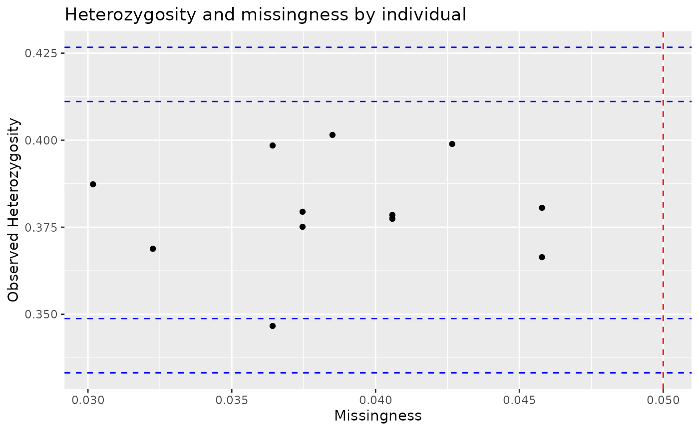
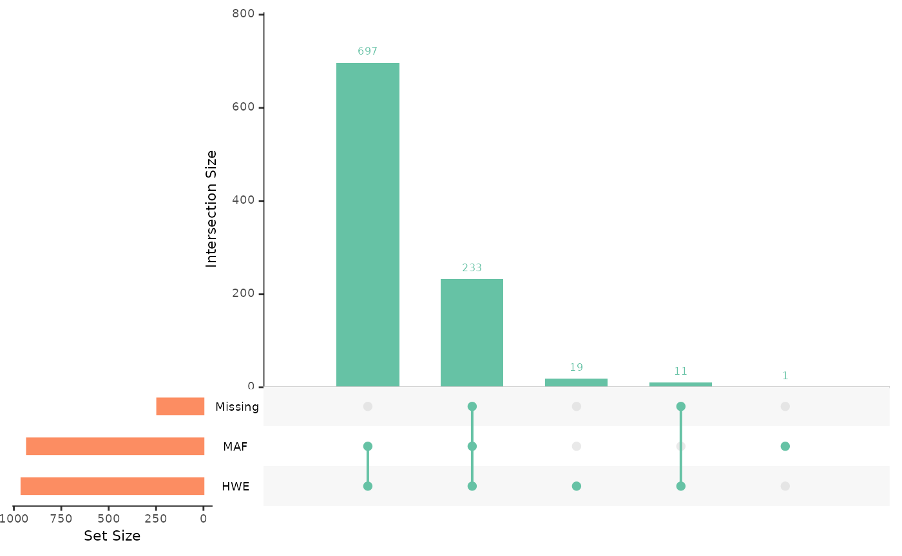
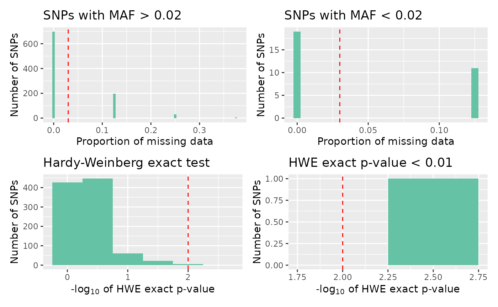
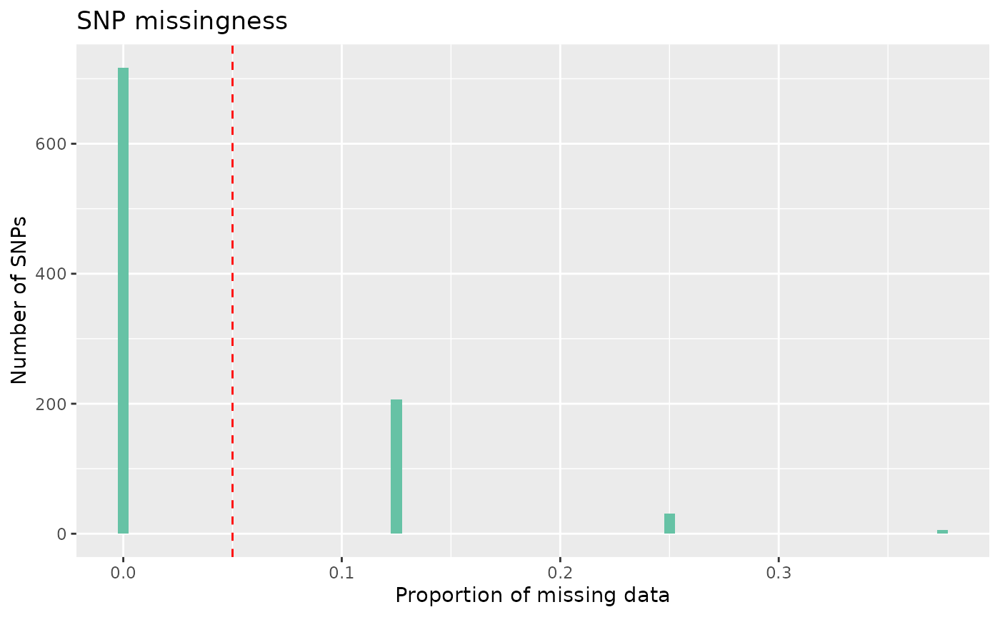

Quality control for SNP datasets
tidypopgen has two key functions to examine the quality of data
across loci and across individuals: qc_report_loci and
qc_report_indiv. This vignette uses a simulated data set to
illustrate these methods of data cleaning.
Read data into gen_tibble format
## Loading required package: dplyr##
## Attaching package: 'dplyr'## The following objects are masked from 'package:stats':
##
## filter, lag## The following objects are masked from 'package:base':
##
## intersect, setdiff, setequal, union## Loading required package: tibble
data <- gen_tibble(
system.file("extdata/related/families.bed",
package = "tidypopgen"
),
quiet = TRUE, backingfile = tempfile(),
valid_alleles = c("1", "2")
)#Quality control for individuals
individual_report <- qc_report_indiv(data)
summary(individual_report)## het_obs missingness
## Min. :0.3467 Min. :0.03018
## 1st Qu.:0.3736 1st Qu.:0.03642
## Median :0.3790 Median :0.03798
## Mean :0.3799 Mean :0.03867
## 3rd Qu.:0.3901 3rd Qu.:0.04110
## Max. :0.4015 Max. :0.04579The output of qc_report_indiv supplies observed
heterozygosity per individual, and rate of missingness per individual as
standard.
These data can also be visualised using autoplot:
autoplot(individual_report)
Here we can see that most individuals have low missingness. If we
wanted to filter individuals to remove those with more than 4.5% of
their genotypes missing, we can use filter.
data <- data %>% filter(indiv_missingness(genotypes) < 0.045)
nrow(data)## [1] 10And if we wanted to remove outliers with particularly high or low
heterozygosity, we can again do so by using filter. As an
example, here we remove observations that lie more than 3 standard
deviations from the mean.
mean_val <- mean(individual_report$het_obs)
sd_val <- stats::sd(individual_report$het_obs)
lower <- mean_val - 3 * (sd_val)
upper <- mean_val + 3 * (sd_val)
data <- data %>% filter(indiv_het_obs(genotypes) > lower)
data <- data %>% filter(indiv_het_obs(genotypes) < upper)
nrow(data)## [1] 10Next, we can look at relatedness within our sample. If the parameter
kings_threshold is provided to
qc_report_indiv(), then the report also calculates a KING
coefficient of relatedness matrix using the sample. The
kings_threshold is used to provide an output of the largest
possible group with no related individuals in the third column
to_keep. This boolean column recommends which individuals
to remove (FALSE) and to keep (TRUE) to achieve an unrelated sample.
individual_report <- qc_report_indiv(data, kings_threshold = 0.177)
summary(individual_report)## het_obs missingness to_keep id
## Min. :0.3467 Min. :0.03018 Mode :logical Min. : 1.00
## 1st Qu.:0.3757 1st Qu.:0.03642 FALSE:1 1st Qu.: 4.25
## Median :0.3790 Median :0.03746 TRUE :9 Median : 6.50
## Mean :0.3812 Mean :0.03725 Mean : 6.60
## 3rd Qu.:0.3957 3rd Qu.:0.04006 3rd Qu.: 9.50
## Max. :0.4015 Max. :0.04266 Max. :12.00We can remove the recommended individuals by using:
We can now view a summary of our cleaned data set again, showing that our data has reduced from 12 to 9 individuals.
summary(data)## id genotypes
## Min. : 1 Length:9
## 1st Qu.: 4 Class :character
## Median : 6 Mode :character
## Mean : 6
## 3rd Qu.: 8
## Max. :11Quality control for loci
loci_report <- qc_report_loci(data)## This gen_tibble is not grouped. For Hardy-Weinberg equilibrium, `qc_report_loci()` will assume individuals are part of the same population and HWE test p-values will be calculated across all individuals. If you wish to calculate HWE p-values within populations or groups, please use`group_by()` before calling `qc_report_loci()`.
summary(loci_report)## snp_id maf missingness hwe_p
## Min. : 1 Min. :0.0000 Min. :0.00000 Min. :0.00144
## 1st Qu.:241 1st Qu.:0.1667 1st Qu.:0.00000 1st Qu.:0.35500
## Median :481 Median :0.2778 Median :0.00000 Median :0.52941
## Mean :481 Mean :0.2682 Mean :0.03723 Mean :0.50607
## 3rd Qu.:721 3rd Qu.:0.3889 3rd Qu.:0.11111 3rd Qu.:0.67059
## Max. :961 Max. :0.5000 Max. :0.33333 Max. :0.76964The output of qc_report_loci supplies minor allele
frequency, rate of missingness, and a Hardy-Weinberg exact p-value for
each SNP. These data can be visualised in autoplot :
autoplot(loci_report, type = "overview")
Using ‘overview’ provides an Upset plot, which is designed to show the intersection of different sets in the same way as a Venn diagram. SNPs can be divided into ‘sets’ that each pass predefined quality control threshold; a set of SNPs with missingness under a given threshold, a set of SNPs with MAF above a given threshold, and a set of SNPs with a Hardy-Weinberg exact p-value that falls above a given significance level.
The thresholds for each parameter, (percentage of missingness that is accepted, minor allele frequency cutoff, and Hardy-Weinberg equilibrium p-value) can be adjusted using the parameters provided in autoplot. For example:
autoplot(loci_report,
type = "overview",
miss_threshold = 0.03,
maf_threshold = 0.02,
hwe_p = 0.01
)
The upset plot then visualises our 961 SNPs within their respective sets. The number above the second bar indicates that 262 SNPs occur in all 3 sets, meaning 262 SNPs pass all of our QC thresholds. The combined total of the first and second bars represents the number of SNPs that pass our MAF and HWE thresholds, here 939 SNPs.
To examine each QC measure in further detail, we can plot a different summary panel.
autoplot(loci_report,
type = "all",
miss_threshold = 0.03,
maf_threshold = 0.02,
hwe_p = 0.01
)
We can then begin to consider how to quality control this raw data set. Let’s start by filtering SNPs according to their minor allele frequency. We can visualise the MAF distribution using:
autoplot(loci_report, type = "maf")Here we can see there are some monomorphic SNPs in the data set.
Let’s filter out loci with a minor allele frequency lower than 2%, by
using select_loci_if. Here, we select all SNPs with a MAF
greater than 2%. This operation is equivalent to plink –maf 0.02.
data <- data %>% select_loci_if(loci_maf(genotypes) > 0.02)
count_loci(data)## [1] 941Following this, we can remove SNPs with a high rate of missingness. Lets say we want to remove SNPs that are missing in more than 5% of individuals, equivalent to using plink –geno 0.05
autoplot(loci_report, type = "missing", miss_threshold = 0.05)
We can see here that most SNPs have low missingness, under our 5%
threshold, some do, however, have missingness over our threshold. To
remove these SNPs, we can again use select_loci_if.
data <- data %>% select_loci_if(loci_missingness(genotypes) < 0.05)
count_loci(data)## [1] 679Finally, we may want to remove SNPs that show significant deviation from Hardy-Weinberg equilibrium, if our study design requires. To visualise SNPs with significant p-values in the Hardy-Weinberg exact test, we can again call autoplot:
autoplot(loci_report, type = "significant hwe", hwe_p = 0.01)
None of the SNPs in our data are significant, however there may be circumstances where we would want to cut out the most extreme cases, if these data were real, these cases could indicate genotyping errors.
data <- data %>% select_loci_if(loci_hwe(genotypes) > 0.01)
count_loci(data)## [1] 677Linkage Disequilibrium
For further analyses, it may be necessary to control for linkage in the data set. tidypopgen provides LD clumping. This option is similar to the –indep-pairwise flag in plink, but results in a more even distribution of loci when compared to LD pruning.
To explore why clumping is preferable to pruning, see https://privefl.github.io/bigsnpr/articles/pruning-vs-clumping.html
LD clumping requires a data set with no missingness. This means we
need to create an imputed data set before LD pruning, which we can do
quickly with gt_impute_simple.
Because we have removed individuals through our filtering, we first need to update the backingfiles with:
data <- gt_update_backingfile(data)## Genetic distances are not sorted, setting them to zero##
## gen_backing files updated, now## using bigSNP file: /tmp/RtmpQruabq/file2b3e5da49b88_v2.rds## with backing file: /tmp/RtmpQruabq/file2b3e5da49b88_v2.bk## make sure that you do NOT delete those files!And then we can impute using:
imputed_data <- gt_impute_simple(data, method = "random")In this example, if we want to remove SNPs with a correlation greater
than 0.2 in windows of 10 SNPs at a time, we can set these parameters
with thr_r2 and size respectively.
to_keep_ld <- loci_ld_clump(imputed_data, thr_r2 = 0.2, size = 10)
head(to_keep_ld)## [1] FALSE FALSE FALSE FALSE FALSE FALSEloci_ld_clump provides a boolean vector the same length
as our list of SNPs, telling us which to keep in the data set. We can
then use this list to create a pruned version of our data:
ld_data <- imputed_data %>%
select_loci_if(loci_ld_clump(genotypes, thr_r2 = 0.2, size = 10))Save
The benefit of operating on a gen_tibble is that each
quality control step can be observed visually, and easily reversed if
necessary.
When we are happy with the quality of our data, we can create and
save a final quality controlled version of our gen_tibble
using gt_save.
##
## gen_tibble saved to /tmp/RtmpQruabq/file2b3e5d6285e7.gt## using bigSNP file: /tmp/RtmpQruabq/file2b3e5da49b88_v2.rds## with backing file: /tmp/RtmpQruabq/file2b3e5da49b88_v2.bk## make sure that you do NOT delete those files!## to reload the gen_tibble in another session, use:## gt_load('/tmp/RtmpQruabq/file2b3e5d6285e7.gt')## [1] "/tmp/RtmpQruabq/file2b3e5d6285e7.gt"
## [2] "/tmp/RtmpQruabq/file2b3e5da49b88_v2.rds"
## [3] "/tmp/RtmpQruabq/file2b3e5da49b88_v2.bk"Grouping data
For some quality control measures, if you have a gen_tibble that
includes multiple datasets you may want to group by population before
running the quality control. This can be done using
group_by.
First, lets add some imaginary population data to our gen_tibble:
We can then group by population and run quality control on each group:
grouped_loci_report <- data %>%
group_by(population) %>%
qc_report_loci()
head(grouped_loci_report)## # A tibble: 6 × 4
## snp_id maf missingness hwe_p
## <int> <dbl> <dbl> <dbl>
## 1 2 0.389 0 1
## 2 3 0.167 0 1
## 3 5 0.278 0 0.4
## 4 7 0.333 0 0.333
## 5 8 0.333 0 0.4
## 6 10 0.444 0 0.492The loci report that we receive here will calculate Hardy-Weinberg equilibrium for each SNP within each population separately, providing a Bonferroni corrected p-value for each SNP.
Similarly, we can run a quality control report for individuals within each population:
grouped_individual_report <- data %>%
group_by(population) %>%
qc_report_indiv(kings_threshold = 0.177)
head(grouped_individual_report)## # A tibble: 6 × 5
## het_obs missingness id group to_keep
## <dbl> <dbl> <int> <chr> <lgl>
## 1 0.372 0 1 A TRUE
## 2 0.356 0 2 A TRUE
## 3 0.366 0 4 A TRUE
## 4 0.383 0 5 A TRUE
## 5 0.372 0 6 B TRUE
## 6 0.405 0 7 B TRUEThis is important when we have related individuals, as background population structure can affect the filtering of relatives.
Grouped functions
It is also possible to run loci and indiv
functions on grouped data. This is useful when you want to run the same
quality control on each group of data, but don’t want to split the data
into separate gen_tibbles.
Grouped functions are built for efficiency and surpass the use of
applying a function with group_map.